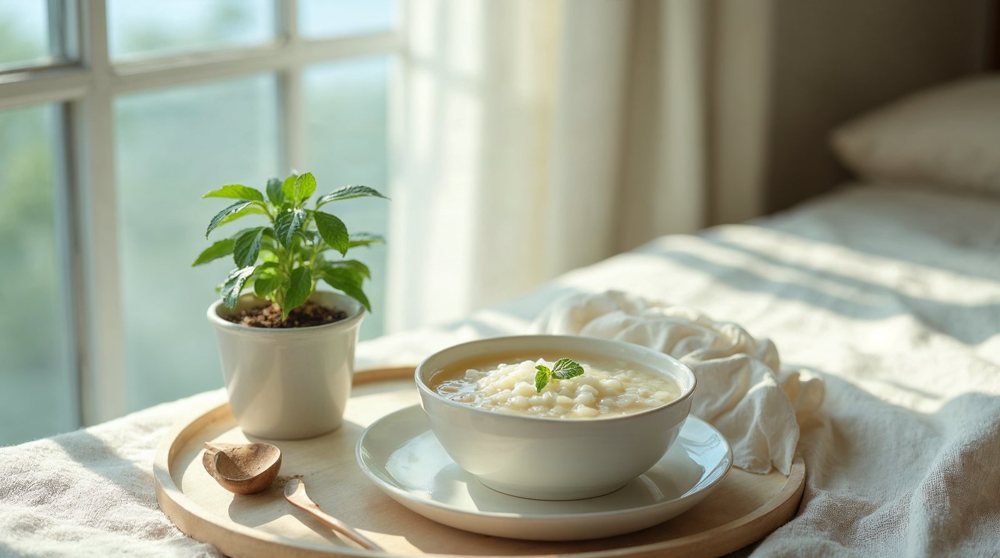
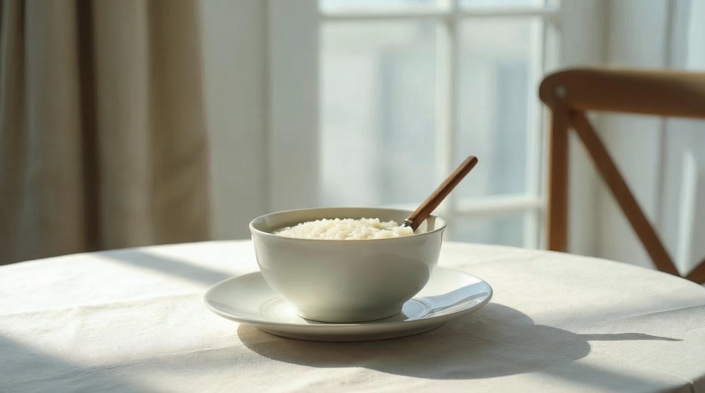
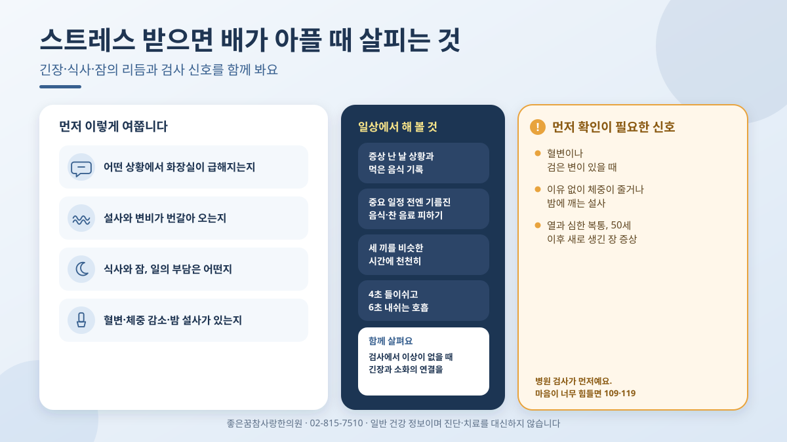

이종호 한의사 감수좋은꿈참사랑한의원 대표원장 (한의사 면허번호 19769)발행 2026-11-26 · 수정 2026-11-26
이 글의 차례
월요일 아침, 출근 지하철이 두 정거장쯤 지났을 때 아랫배가 꼬이듯 아파 옵니다. 머릿속으로는 벌써 다음 역 화장실 위치를 떠올립니다. 회의가 있는 날이면 더 심하고 주말에는 조용한 이런 배앓이는, 마음의 긴장에 장이 먼저 반응하는 경우가 많습니다.
머리와 장은 신경으로 촘촘히 이어져 있어서, 긴장이 이어지면 장의 움직임과 감각이 달라지고 설사와 변비가 번갈아 오기도 합니다. 그래서 저는 배 증상과 함께 그 일이 생기는 상황, 끼니와 잠, 요즘 마음을 차례로 여쭙고 모든 분께 맥을 짚습니다.
진료실에서 자주 듣는 말씀이 있습니다. 내시경까지 했는데 깨끗하다니 다행이긴 한데, 그래서 더 답답하다는 말씀입니다. 검사가 깨끗하다고 해서 출근길마다 화장실을 찾는 하루가 달라지지는 않으니까요.
스트레스성이라는 말이 서운하게 들리셨던 분도 계실 겁니다. 마음만 단단히 먹으면 될 일을 괜히 키운 것처럼 들리기도 하지요. 저는 그 말을 그런 뜻으로 쓰지 않습니다.
몸과 마음을 함께 본다는 것은 증상을 마음 탓으로 돌린다는 뜻이 아닙니다. 같은 배앓이라도 잠을 못 잔 날, 끼니를 거른 날, 마음이 무거운 날 더 크게 오는 그 흐름을 함께 보려는 것입니다. 배가 아픈 것도, 그 배로 하루를 버텨 오신 것도 진짜입니다.
왜 긴장하면 배가 먼저 아플까요
긴장하면 몸은 무언가에 맞설 준비를 합니다. 심장이 빨라지고 어깨에 힘이 들어가는 동안, 심장 박동과 소화를 함께 조절하는 자율신경도 한쪽으로 쏠립니다. 장은 그 변화를 꽤 일찍, 꽤 솔직하게 드러내는 곳입니다.
장이 서두르는 날, 움츠러드는 날
어떤 분은 긴장하면 장이 서둘러 움직여 화장실이 급해집니다. 어떤 분은 반대로 장이 움츠러들어 며칠씩 소식이 없고 배만 묵직합니다. 한 사람에게서 둘이 번갈아 오는 일도 흔해서, 이번 주는 설사였는데 다음 주는 변비라고 하시는 분이 많습니다.
긴장이 오래 이어지면 장이 평소보다 예민해지기도 합니다. 보통 때라면 느끼지 못했을 가스나 움직임까지 통증으로 다가오는 것이지요. 화장실에 다녀오면 복통이 한결 가라앉는다는 말씀도 이런 경우에 자주 듣습니다.
걱정이 다시 배를 조이는 고리
한두 번 곤란한 일을 겪고 나면 배가 아플까 봐 걱정하는 마음이 생깁니다. 그 걱정이 다시 배를 긴장시켜, 아침마다 같은 일이 되풀이되기도 합니다. 화장실이 없는 버스를 피하고 중요한 날엔 물도 덜 마시다 보면, 하루가 점점 좁아집니다.
이 고리는 의지가 약해서 생기는 것이 아닙니다. 몸이 곤란했던 상황을 기억해 두었다가 미리 대비하는 반응에 가깝습니다. 그래서 다그치기보다 고리가 시작되는 지점을 하나씩 찾아 느슨하게 만드는 쪽으로 이야기를 나눕니다.
잠과 끼니가 무너진 다음 날
바쁜 날일수록 아침은 빈속에 커피 한 잔, 점심은 대충, 저녁은 늦게 몰아서 먹게 됩니다. 이런 날이 며칠 겹치면 장은 언제 일해야 할지 헷갈리기 쉽습니다. 잠까지 설친 다음 날에는 같은 자극에도 배가 더 크게 반응하는 분이 많고요.
배앓이를 이야기하는 자리에서 제가 잠과 끼니 시간을 꼭 여쭙는 이유가 여기에 있습니다. 배가 아팠던 날만 따로 떼어 보면 잘 보이지 않던 것이, 전날 밤과 그날 아침을 나란히 놓으면 보이기 시작합니다.
한의학에서 보는 긴장과 소화
한의학에서는 소화를 비위(脾胃)의 일로 설명하면서, 마음의 긴장과 몸의 온기가 함께 영향을 준다고 봐 왔습니다. 긴장이 오래 쌓여 배가 단단해지고 더부룩한 모습을 간(肝)과 비위의 어울림이 흐트러진 것으로 풀어 설명하기도 합니다.
그래서 진료실에서는 찬 음식을 먹으면 더 불편한지, 긴장하면 배가 먼저 반응하는지, 손발이 찬지를 함께 여쭙습니다. 같은 설사라도 배가 차고 기운이 없는 분과, 속에 열감이 있고 예민한 분은 살피는 방향이 다르기 때문입니다.
검사가 깨끗했다는 말의 뜻
배앓이와 설사·변비가 몇 달씩 되풀이되는 모습을 의학에서는 과민성장증후군이라 부르기도 합니다. 다만 이 이름은 염증성 장질환이나 대장의 다른 병이 아닌지 먼저 확인한 뒤에 붙습니다.
검사가 깨끗했다는 것은 그 확인을 한 단계 마쳤다는 뜻이지, 불편이 없다는 뜻은 아닙니다. 이제는 어떤 날, 어떤 상황에서 배가 먼저 반응하는지를 찾아볼 차례입니다.
예를 들면 이런 경우입니다
예를 들어 월요일 아침 회의가 있는 날마다 출근길에 배가 아파 중간에 내리게 되는 경우라면, 일요일 밤 잠든 시각과 월요일 아침 빈속 커피, 회의 일정을 나란히 적어 봅니다. 아침을 조금 앞당겨 따뜻하게 먹고, 집에서 화장실에 앉을 여유부터 만들어 봅니다.
예를 들어 이직이나 이사처럼 생활이 크게 바뀐 뒤 몇 주째 배가 예민해진 경우라면, 바뀐 것들을 하나씩 짚어 봅니다. 출근 시각, 점심을 먹는 곳, 잠드는 방까지 달라졌다면 장이 낯설어할 만한 일이 여럿 겹친 셈이니까요.
예를 들어 아픈 가족을 돌보느라 끼니를 놓치다가 밤늦게 허겁지겁 먹고, 다음 날 변비와 더부룩함이 이어지는 경우라면 식사 시간을 조금이라도 앞당길 방법부터 찾습니다. 돌보는 분의 잠과 쉬는 시간도 함께 여쭙습니다.

스스로 점검해 보세요
- 중요한 일정이 있는 날 아침에 배가 아프거나 화장실이 급해진다
- 설사와 변비가 몇 주 사이에 번갈아 온다
- 화장실에 다녀오면 복통이 한결 가라앉는다
- 휴일이나 마음 편한 여행 중에는 배가 비교적 조용하다
- 잠을 설친 다음 날 배가 더 예민하다
- 화장실 걱정 때문에 버스나 긴 회의를 피한 적이 있다
- 빈속에 커피를 마시거나 끼니를 거른 날 더 불편하다
세 가지 넘게 해당한다면 배와 긴장의 흐름을 함께 살펴볼 만합니다. 표시한 목록을 진료 때 그대로 보여 주셔도 됩니다. 다만 아래 '이런 증상은 먼저 확인이 필요합니다'의 신호가 하나라도 있다면 그쪽이 먼저입니다.
먼저 이렇게 여쭙니다
- 배는 어디가 아프고, 화장실에 다녀오면 가라앉나요?
- 설사와 변비 가운데 어느 쪽이 잦고, 대변 모양은 어떤가요?
- 주로 어떤 상황에서 시작되나요? 출근길, 회의 전, 사람 많은 곳, 특정 요일처럼요.
- 끼니 시간과 커피·술, 잠드는 시각과 깨는 횟수는 어떤가요?
- 요즘 마음에 걸린 일이 있나요?
- 받으신 대장내시경·혈액 검사 결과와 드시는 약이 있나요?
마음 이야기는 편한 만큼만 하셔도 됩니다. 처음부터 모든 것을 말씀하지 않으셔도 되고, 다음 진료에서 이어서 여쭙습니다.
같은 설사라도 출근 전 아침에만 오는지, 밤에 자다가도 깨서 화장실에 가는지에 따라 살필 방향이 크게 달라집니다. 밤에 잠을 깨우는 설사나 복통은 긴장보다 다른 원인을 먼저 확인해야 하는 신호이기도 해서, 이 질문은 빼놓지 않고 드립니다.

일상에서 먼저 해 볼 수 있는 것
- 세 끼를 비슷한 시간에, 적은 양이라도 천천히 먹기
- 일정이 많은 날 아침은 빈속 커피 대신 따뜻한 물 한 잔과 가벼운 식사로 시작하기
- 평소보다 20~30분 일찍 일어나 아침 식사 뒤 화장실에 앉을 여유 만들기
- 긴장이 올라올 때 배에 손을 얹고 4초 들이쉬고 6초 내쉬기를 몇 번 해 보기(어지러우면 바로 멈추기)
- 하루 20~30분, 옆 사람과 이야기를 나눌 수 있을 만큼의 속도로 걷기
- 걱정은 종이에 적어 두고, 낮에 정해 둔 시간에만 다시 꺼내 보기
장에 좋다는 음식이나 유산균을 한꺼번에 챙기기보다, 불편을 키우는 습관 하나를 줄이는 쪽이 오래 이어 가기 쉽습니다. 바꿀 때는 한 번에 한 가지씩, 일주일쯤 적어 가며 지켜보세요. 누구에게나 좋다는 방법이 어떤 분에게는 맞지 않기도 합니다.
설사가 잦다고 끼니를 굶는 분도 계신데, 그러면 다음 식사 때 장이 더 예민하게 반응하기도 합니다. 적은 양이라도 제때 드시고 물을 자주 나눠 드세요. 기름지고 매운 음식과 술은, 큰 일정을 앞둔 전날만큼은 쉬어 가시길 권합니다.
큰 일정을 앞둔 날
발표나 면접처럼 미리 정해진 날이 있다면 전날 저녁은 평소보다 조금 일찍, 가볍게 드세요. 잠자리에서는 화면을 내려놓고, 다음 날 아침에는 집을 나서기 전 화장실에 앉을 10분을 먼저 비워 둡니다.
도착 시각을 넉넉히 잡아 두고, 자주 다니는 길의 화장실 위치를 미리 알아 두는 것만으로도 마음이 덜 쫓긴다는 분이 많습니다. 목표는 낮게 잡으세요. 못 지킨 날이 생겨도 스스로를 탓하지 말고 다음 날 다시 하시면 됩니다.
얼마나 지켜보면 될까요
이렇게 2~4주쯤 지내며 기록을 이어 가 보세요. 어떤 상황에서 배가 먼저 반응하는지 조금씩 보이기 시작합니다. 그래도 화장실 걱정 때문에 출근과 외출이 부담스럽거나, 배 때문에 잠까지 흔들린다면 혼자 버티지 말고 상담을 받아 보시길 권합니다.
마음의 불안과 몸의 긴장을 어떻게 나눠 말씀하시면 좋을지는 불안한 마음과 몸이 긴장한 느낌은 어떻게 나눠서 이야기하나요?에 따로 정리해 두었습니다.
한의원에서 함께 살필 수 있는 경우
- 내과 검사에서 큰 이상이 없다고 들었는데도 긴장하면 배가 아프고 설사나 변비가 되풀이되는 경우
- 배 증상과 함께 잠이 얕아지고 어깨와 목이 굳는 경우
- 화장실 걱정 때문에 출근이나 외출이 부담스러워진 경우
- 여러 불편이 겹쳐 무엇부터 손봐야 할지 모르겠는 경우
좋은꿈참사랑한의원에 처음 오시면 언제부터, 어떤 상황에서 배가 불편한지부터 충분히 듣습니다. 받으신 검사 결과지와 드시는 약도 이때 함께 봅니다. 경고 신호가 보이면 내과 진료를 먼저 안내합니다.
그다음 모든 분께 그렇듯 양손의 맥을 짚으며 이야기를 이어 갑니다. 긴장이 오래 쌓인 분은 손끝에 맥이 거문고 줄처럼 팽팽하게 닿을 때가 있습니다. 한의학에서는 이런 맥을 현맥(弦脈)이라 부르고, 긴장과 피로가 쌓인 상태를 살피는 단서로 봅니다.
그렇다고 맥 하나로 결론을 내리지는 않습니다. 제가 늘 드리는 말씀이 있습니다. "맥은 그림자입니다. 실체가 아니라, 지금 몸이 어떻게 버티고 있는지 비춰 주는 그림자를 느끼는 것입니다."
필요하다고 판단될 때 혀를 보고, 누운 자세에서 배를 살피는 복진을 합니다. 갈비뼈 아래와 배꼽 둘레가 단단한지, 숨 쉴 때 배가 부드럽게 오르내리는지, 손에 닿는 배가 찬지 봅니다. 복진 역시 맥과 함께 맞춰 보는 단서 가운데 하나입니다.
이야기와 진찰을 모아 침이나 한약 상담 가운데 맞는 방향과, 이번 주에 바꿔 볼 생활 한두 가지를 함께 정합니다. 치료받는 동안만큼은 편히 쉬실 수 있도록 자세와 온도도 여쭙습니다. 정신건강의학과 치료를 받고 계시다면 그 치료를 이어 가는 것을 우선합니다.
다시 오시면 맥을 다시 짚고, 지난번에 이야기한 일정과 기록부터 이어서 여쭙니다. 해 보니 어땠는지, 무엇이 어려웠는지까지 들어야 다음 이야기를 무리 없이 정할 수 있습니다. 평일은 저녁 8시까지 진료하니 퇴근길에 들르셔도 됩니다.
속쓰림이나 식후 더부룩함처럼 다른 소화 불편이 함께 있다면 소화가 오래 불편할 때 한의원에서는 무엇을 먼저 묻나요?에 정리한 질문들도 미리 읽어 두시면 좋겠습니다.
이렇게 기록해 오시면 상담이 쉬워집니다
거창한 일기는 필요 없습니다. 하루에 한 줄, 배가 아팠던 시각과 그날 있었던 일, 긴장 정도를 0부터 10까지 숫자로 적어 보세요. 그 옆에 대변 횟수와 모양(묽은지, 단단한지), 끼니 시각과 커피·술, 잠든 시각만 더하면 충분합니다.
받으신 대장내시경이나 혈액 검사 결과지, 드시는 약과 유산균·영양제 이름도 함께 챙겨 주세요. 사진으로 찍어 오셔도 괜찮습니다.
두 주쯤 적어 보면 배가 아팠던 날과 잠을 설친 날, 끼니를 거른 날이 겹치는지 눈에 들어옵니다. 기록은 장을 감시하려는 것이 아니라, 내 몸이 언제 무엇에 놀라는지 알아 두려는 것입니다.
일요일 밤마다 마음이 무거워지고 월요일 아침 배가 먼저 아픈 분이라면 일요일 저녁만 되면 출근 걱정에 가슴이 답답하고 잠이 안 올 때는 어떻게 하나요?도 함께 읽어 보세요.
배가 먼저 말을 거는 분들은 대개 오래 참아 온 분들입니다. 중요한 날마다 화장실 위치부터 확인하며 지내 온 시간이 얼마나 고단했을지 짐작합니다. 다음에 오시면 이번 주에 배가 가장 먼저 반응했던 순간이 언제였는지, 그 전날 밤은 어땠는지부터 여쭙겠습니다.
이런 증상은 먼저 확인이 필요합니다
- 피 섞인 변·검은 변, 원하지 않은 체중 감소, 밤에 잠을 깨우는 복통·설사, 50세 이후 처음 생긴 배변 변화
- 스스로를 해칠 생각이 들면 ☎ 109로 바로 연락하세요.
이런 신호가 있으면 한의원보다 가까운 병원이나 응급실을 먼저 찾으세요.

여쭙는 것
- 배는 어디가 아프고, 화장실에 다녀오면 가라앉나요?
- 설사와 변비 가운데 어느 쪽이 잦고, 대변 모양은 어떤가요?
- 주로 어떤 상황에서 시작되나요? 출근길, 회의 전, 사람 많은 곳, 특정 요일처럼요.
생활에서 해 볼 것
- 세 끼를 비슷한 시간에, 적은 양이라도 천천히 먹기
- 일정이 많은 날 아침은 빈속 커피 대신 따뜻한 물 한 잔과 가벼운 식사로 시작하기
- 평소보다 20~30분 일찍 일어나 아침 식사 뒤 화장실에 앉을 여유 만들기
한의원에서 함께 살필 것
- 내과 검사에서 큰 이상이 없다고 들었는데도 긴장하면 배가 아프고 설사나 변비가 되풀…
- 배 증상과 함께 잠이 얕아지고 어깨와 목이 굳는 경우
- 화장실 걱정 때문에 출근이나 외출이 부담스러워진 경우
먼저 확인이 필요한 신호
- 피 섞인 변·검은 변, 원하지 않은 체중 감소, 밤에 잠을 깨우는 복통·설사, 50…
- 스스로를 해칠 생각이 들면 109로 바로 연락하세요.
한눈에 보는 표
| 구분 | 핵심 |
|---|---|
| 여쭙는 것 | 배는 어디가 아프고, 화장실에 다녀오면 가라앉나요? 설사와 변비 가운데 어느 쪽이 잦고, 대변 모양은 어떤가요? |
| 생활에서 해 볼 것 | 세 끼를 비슷한 시간에, 적은 양이라도 천천히 먹기 일정이 많은 날 아침은 빈속 커피 대신 따뜻한 물 한 잔과 가벼운 식사로 시작하기 |
| 한의원에서 함께 살필 것 | 내과 검사에서 큰 이상이 없다고 들었는데도 긴장하면 배가 아프고 설사나 변비가 되풀이되는 경우 배 증상과 함께 잠이 얕아지고 어깨와 목이 굳는 경우 |
| 먼저 확인이 필요한 신호 | 피 섞인 변·검은 변, 원하지 않은 체중 감소, 밤에 잠을 깨우는 복통·설사, 50세 이후 처음 생긴 배변 변화 스스로를 해칠 생각이 들면 109로 바로 연락하세요. |
자주 묻는 질문
검사에서 이상이 없다는데, 결국 마음 탓인가요?
마음 탓으로 돌리려는 것이 아닙니다. 긴장하면 장의 움직임과 감각이 실제로 달라질 수 있어, 배 증상과 함께 잠·끼니·긴장의 흐름을 같이 살핍니다.
설사가 잦은데 굶는 편이 낫지 않을까요?
끼니를 거르면 다음 식사 때 장이 더 예민해지기도 합니다. 적은 양이라도 제때 천천히 드시고 물을 나눠 드세요.
정신건강의학과 약이나 장 약을 먹고 있어도 진료받을 수 있나요?
네. 드시는 약 이름을 모두 알려 주세요. 약은 처방한 의사와 상의 없이 줄이거나 끊지 않고, 지금 받는 치료를 이어 가는 것을 우선합니다.
유산균을 먹어 보면 도움이 될까요?
사람마다 반응이 다릅니다. 드신다면 2~3주쯤 대변과 배 상태를 적어 보시고, 더부룩함이 심해지면 줄이거나 멈춘 뒤 진료 때 알려 주세요.
좋은꿈참사랑한의원은 재진 때 지난번 이야기부터 이어서 여쭙니다. 진료시간과 예약은 오시는 길에서 확인하세요.
어디서 상담받을 수 있나요?
좋은꿈참사랑한의원은 서울 동작구 만양로2길 2 신성빌딩 3층·5층(서울 동작구 상도동, 7호선 상도역 3번 출구 근처)에 있습니다. 한의사 3명(이종호 대표원장, 조영기 수석진료원장, 정원영 진료원장)이 진료합니다. 진료시간은 평일 09:30~20:00(점심 13:00~14:00), 토·일·공휴일 09:30~15:00이며, 방문 전 전화로 확인을 권합니다. 예약은 네이버 예약, 카카오톡 상담, 전화 02-815-7510로 받습니다.
이 글은 일반적인 건강 정보이며 개인의 진단이나 치료를 대신하지 않습니다. 증상이 있거나 복용 중인 약이 있다면 진료를 통해 확인하세요. 치료 효과는 개인마다 다를 수 있습니다.
작성 기준: 일반적으로 알려져 있는 건강 정보를 참고해 정리했습니다(대표원장 감수). 증상 기록은 1~2주 동안 하루 1회, 비슷한 시간에 적어 오시면 지난 상태와 비교하기 쉽습니다.